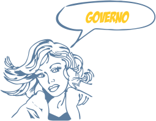
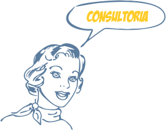

Marketing Digital
Search Engine Optimization- SEO |
A Otimização de site é uma estratégia de marketing para sua empresa, pois o posicionamento de um site nos resultados de busca influência no direcionamento de visitantes, podendo aumentar o volume de negócios.
SEO faz a diferença, pois proporciona resultados a médio e longo prazo, com o crescente número de visitantes no site. Os sites com SEO recebem em média 70% dos cliques dos usuários, mais do que os sites sem essa otimização que recebem apenas 30% dos cliques.
Search Engine Marketing – SEM |
Agora imagine alguém procurando por um Salão de Festas. Que o termo é relevante para a pesquisa naquele momento? E se a pessoa que esta realizando a busca quisesse gastar, não seria ótimo para o dono de um Salão de Festas que o Salão dele aparecesse logo nos primeiros resultados? Ou aparecesse com visibilidade maior que os outros links? Para ajudar no posicionamento dos links nas ferramentas de busca surgiu o SEM: Search Engine Marketing.
O Que é o "Search Engine Marketing – SEM"?
Em sua tradução para o português quer dizer Marketing de Otimização em Buscadores. O SEM são as estratégias de Marketing via Ferramenta de Busca. Ele é baseado na palavra-chave. Quando se busca uma Salão de Festas como no exemplo, a pessoa procura por “Salão de Festas” e recebe a lista de links relacionados. Ele pode procurar também por “Espaço para festas”, “Local para eventos” ou qualquer outro termo relacionado ao seguimento. A lista pode ser infinita, por isto a importância da palavra-chave no Search Engine Marketing- SEM.
Vantagens do Search Engine Marketing sobre as publicidades tradicionais.
- Relevância: a pessoa vê a publicidade quando está procurando o assunto;
- Visibilidade: As ferramentas de busca estão entre os site mais famosos de internet, sendo a página inicial de navegação de muitas pessoas.
O Search Engine Marketing é mais uma alternativa para você conseguir público selecionado para o seu site. Consiste em um conjunto de estratégias sendo um trabalho a longo prazo.
Social Media Optimization SMO |
No passado, a única forma de se encontrar um site era através de publicidade/parcerias ou dos buscadores. Hoje, com uma boa campanha de mídias sociais, pode-se conseguir muitos clientes e usuários. Mas não basta que a empresa esteja presente nas mídias sociais, é preciso que aja uma verdadeira integração entre o site e as mídias sociais.
 |
 |  |